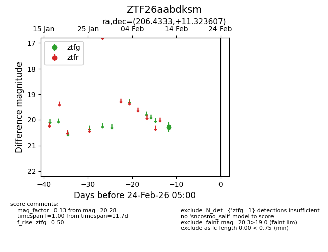
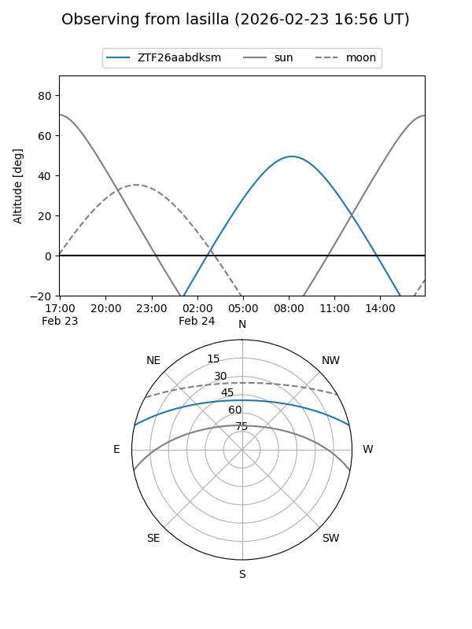
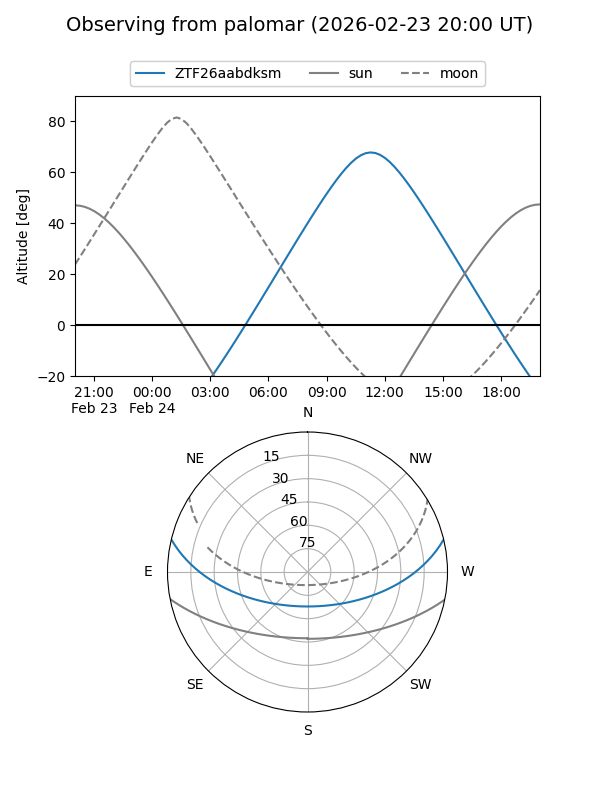

ZTF26aabdksm
Target ZTF26aabdksm at 2026-02-24 09:08
Aliases and brokers:
FINK: link
Lasair: link
ALeRCE: link
alt names
ZTF26aabdksm (ztf,fink_ztf)
Coordinates:
equatorial (ra, dec) = 206.4333,+11.32361
equatorial (HMS+DMS) = 13:45:43.99,+11:19:24.99
galactic (l, b) = (344.4586,+69.68879)
Flags:
Photometry:
last ztfg=20.28
1 ztfg detections
Lightcurve

Visibility


Additional plots